Hoje é Dia do Médico. Mas quem ganhou presente fui eu.

Arraste →
Arraste →Ela me pediu para operar 6 meses depois do parto. Eu disse “ainda não”.
É como elas se sentiram cuidadas.
Feliz Dia do Médico
Obrigado por confiarem em mim.
O presente é meu.